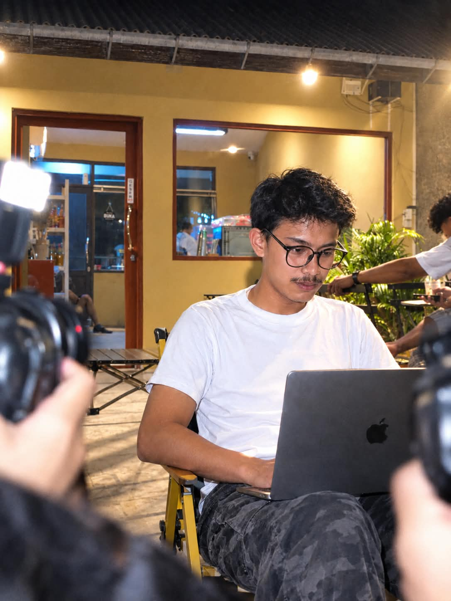
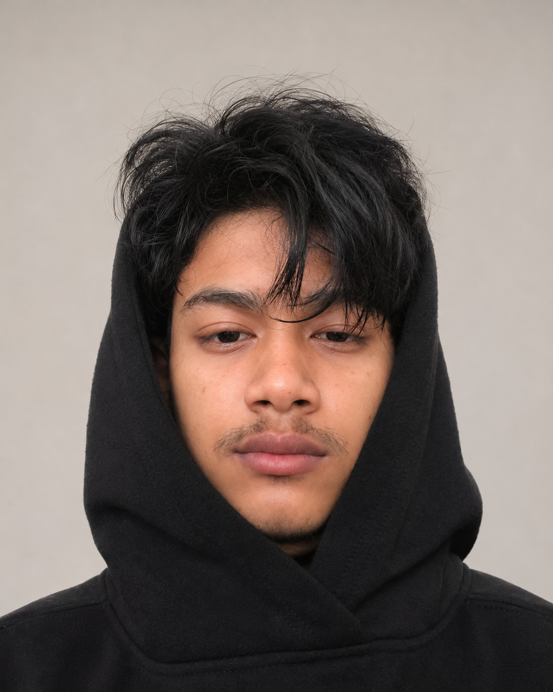

Aku Haikal, mahasiswa Pulp and Paper di Institut Teknologi Sains Bandung. Aku belajar dari proses industri dan mengeksplorasi data serta pengembangan web front-end.Lihat pengalamanku ↘

01Pulp & Paper02Data03Front-end Web
Pengalaman · Eksplorasi · KaryaKenali ceritaku ↓
01 / Tentang aku
Belajar di kampus. Melihat langsung di industri.

Pendidikan saat ini
Institut Teknologi Sains Bandung
Mahasiswa · Pulp and Paper
Fokus portofolio Karya, pengalaman, dan proses belajar.
Aku Haikal, mahasiswa Pulp and Paper di Institut Teknologi Sains Bandung. Pengalaman magang di APP Group memperkenalkanku pada operasi mesin kertas, produksi tissue, serta proses coating dan kaitannya dengan kualitas kertas.
Di luar bidang perkuliahan, aku juga mengembangkan kemampuan di bidang data dan web development, khususnya front-end. Portofolio ini menjadi tempat untuk berbagi pengalaman, mendokumentasikan proses belajar, dan menampilkan karya yang aku buat.
02 / Pengalaman industri
Tiga pengalaman. Sudut pandang baru.
APP Group Karawang, Jawa Barat, Indonesia Seluruh pengalaman dilakukan on-site.
Mengenal secara langsung operasi mesin kertas dan proses pembuatan kertas.
Mempelajari pengoperasian mesin, alur produksi, serta pengendalian kualitas kertas.
Mengamati aktivitas produksi harian dan koordinasi antaranggota tim produksi.
03 / Keahlian & pengembangan diri
Industri bertemu teknologi digital.
01
Pulp & Paper
Pemahaman dasar proses manufaktur kertas dan tissue, alur operasi mesin, proses coating, serta pengamatan parameter produksi dan kualitas.
Dipelajari melalui kuliah dan magang.
02
Data
Bidang yang sedang aku kembangkan untuk memahami informasi, mengenali pola, dan menyampaikan temuan secara lebih terstruktur.
Fokus pengembangan kemampuan.
03
Front-end Web
Pengembangan tampilan dan interaksi website menjadi bagian dari eksplorasi digitalku, dengan perhatian pada pengalaman pengguna.
Fokus pengembangan kemampuan.
04 / Karya pilihan
Dari ide menjadi website yang bisa dikunjungi.
01 / Website
Fapong Gallery
Website yang aku buat untuk memperkenalkan Fapong Gallery, penyewaan kostum Jaipong di Karawang. Pengunjung dapat menjelajahi galeri, melihat katalog kostum, dan menemukan informasi kontak.
Website yang aku buat untuk memperkenalkan proses rewinding dalam industri kertas melalui materi pengenalan dan simulator interaktif. Proyek ini mempertemukan bidang Pulp and Paper yang aku pelajari dengan pengembangan website.
Bidang
Pulp & Paper · Web development
Peran
Pembuat website
Fokus
Pengenalan proses rewinding serta simulasi setup dan operasi mesin